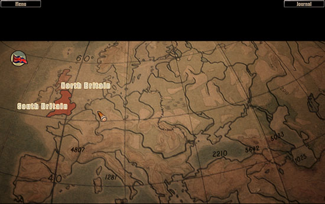
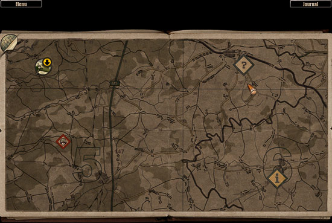
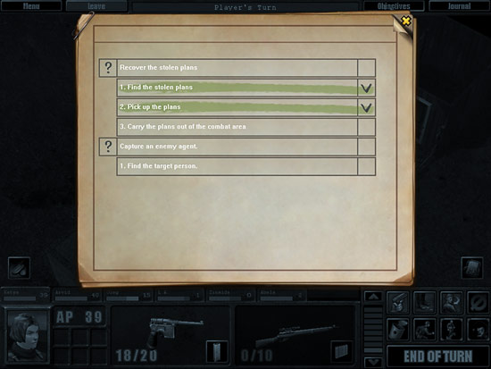
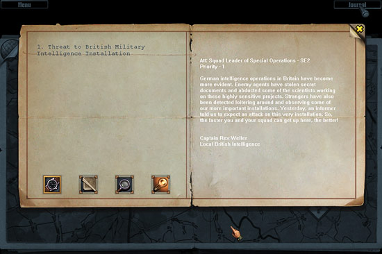
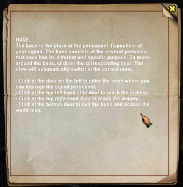

This chapter describes the map screens using which your
squad will be travelling between various locations, and informational screens
displaying your progress, the clues you find and some other useful information.
Global map
Global map shows territories in Europe and Asia where your
group can go. You get on the global map directly from base or after exiting
a region map. This map allows your squad to travel to one of the regions of
the world to perform a mission, or return back to base.

On the geographical map, the regions currently available
to you are filled with colour and marked appropriately. The number of available
regions depends on the information you currently have, suggesting enemy activity
somewhere (in a country, area, district). At the beginning of the game you
know only about the single region; then the number increases. You can fly
to any of the available regions regardless whether you have an active mission
there or not. However, you should go to the region the clues you have point
at, and if there're several regions meeting that criteria we suggest you start
with the highest-priority mission (such an region flickers on the map). But
the final decision where to take your squad is yours.
To go the selected region, simply click on it with the marker
cursor. To return to base, click on the flag at the top left screen corner.
Buttons on the top panel allow to call up the game menu and view Journal (useful
when selecting a mission).
Region map
This map shows the region of the country where your group
is currently operating. You go to a region by selecting it on the global map.
Within the region, the group moves around by themselves. You can arrive to
the area where you current mission must be accomplished, get involved into
a random encounter with the enemy or set up camp and stay there for a while.
Exiting any game zone — scenario zone, random encounter zone or
camp — brings you back to the region map. To return to the global map,
you must get back to your starting point.

Your squad's current position on the region map is marked
by a round icon. When the squad is not moving around, the icon displays a
tent symbol. If you are located above a script zone or an entry/exit zone
(a circle with an aircraft), the group icon has an arrow meaning you can move
on to that zone. Buttons on the top panel allow to call up the game menu or
view Journal records. To get to a point on the map, click on it with marker
cursor; note that travelling takes some time.
Temporary exit to global map
You can view the global map without having to move the whole
group up to that level. Simply click on the half-globe at the top left-hand
screen corner. To return to the region map, use its scaled-down image at the
top right-hand corner of the global map (the flag providing access to base
is not displayed in this mode).
Scenario zones
The light square icons in dark frames indicate script zones.
Question mark on the icon means the zone is unexplored (you haven't yet been
there); the «i» symbol means the zone is known to you: you've been there and
completed one or more missions. To get information about a zone, place the
cursor over it; a large window will appear on the screen. It displays names
of objects in the zone, the mission associated with this zone and other useful
things. For zones where you've already been, this window also displays the
list of clues you found.
If there're several new zones on the region map, one of
the icons would flicker — that's the zone associated with the highest-priority
mission. You can go to any of the available zones; the choice is yours. To
get there, simply click on the zone. After a while your squad will reach it
and an arrow will appear on the icon; click on the squad's icon to enter the
zone.
Along the way your squad may encounter enemies. Also, you
can set up camp and stay there any time while you're on the region map.
Random encounters
Moving around a region or even staying put somewhere, you
may encounter armed enemies. Usually it's small groups of regular military
or local residents (armed patrols); in some places you might stumble upon
members of illegal organisations. On the region map such groups are indicated
by icons with a helmeted head, in red frames. The routes these groups take
and their comings and goings are mostly random.
Conflict with such a group begins immediately after you
encounter it, i.e. as soon as your icons cross. If your group is not ready
for a clash, try to map a route bypassing the enemy groups marked on the map.
If you do get into a random encounter zone, theoretically you may be able
to leave it in the usual way via the zone border (see Combat Screen section).
If you're returning after a mission carrying the wounded and have spent most
of the ammunition, you probably won't be too keen on a random clash with the
enemy. However, random encounters shouldn't always be avoided: usually these
groups are not as strong as the opposition in the script zones, while your
characters would still get combat experience and possibly get hold of some
rare weapons unavailable at base.
Camp
If need be, your squad can stop and set camp anywhere on
the map where you see an icon with tent. You can stay in camp for any period
of time. There your characters can swap things (e.g. weapons and ammunition);
reload their weapons and treat the wounds (at hard or impossible game difficulty).
To set camp, click on your squad's icon. Note that despite the fact camp always
looks more or less the same, it's always set in a different place; so if your
characters leave something there, the items will be irretrievably lost.
Returning to global map
You can only get back to the global map from the region
map at the entry point. Click on the icon with aircraft and wait until your
squad gets there; then click on the squad's icon.
Objectives screen
Objectives screen (it looks like a notebook) displays the
list of objectives for your current script mission, and your progress. To
call up this screen, click on Objectives button on the top panel of the Combat
screen (while you're performing a scenario mission). Alternatively you can
use <O> shortcut. This button is inactive during random encounters or in camp.

Entering a script zone, you must have at least one main
objective logically arrived at on the basis of the clues you found or received
directly from your command. How detailed the objectives are, depends on the
difficulty level of the game. If you're playing Normal game, you get the full
list of objectives. With Hard game, some of the objectives will be marked
as «Undiscovered»; but you'll still know the total number of clues
to be found in the zone. With Impossible game, the number of clues remains
unknown.
Primary and secondary objectives
Completing an objective usually takes more than one action;
frequently you'll have to take several sequential actions and deal with certain
intermediate tasks, or secondary objectives. Secondary mission objectives
are included in the list to make your life easier and suggest a more efficient
course of actions to you. If you accomplish an objective, regardless of how
you managed to do that, it will be credited to you.
Primary and secondary objectives are listed separately.
If you haven't yet started to work on an objective or if it remains unknown,
there's a question mark displayed to the left of the objective's line in the
list; if the objective is known and you're working on it, it's marked with
«i» symbol. To the right of the objective's line there's a check-box to indicate
whether it's accomplished. Secondary objectives are listed below the primary
ones. Completed objectives are ticked in the right field and marked with a
green marker; failed objectives (i.e. the ones which cannot be completed any
longer) are marked with a cross and a red marker. Use the vertical scroll-bar
on the right to scroll through the list as may be necessary.
Failed objectives
When you can't possibly accomplish an objective any longer,
it's considered failed. For example, you received an objective to rescue your
agent and bring him to base, but the enemy killed him; or you killed an agent
you were ordered to capture alive and interrogate. Another possibility: a
blast destroyed documents you were supposed to obtain. Finally, some objectives
have deadlines; if you don't meet them, you fail.
If you do fail some of the objectives in the list, it doesn't
necessarily mean you fail the whole mission; in many cases finding a single
clue in the zone is enough. The mission will be definitely failed if you fail
all its objectives which would provide clues needed to move on to next missions.
If you find yourself in such a situation and no unexplored zones remain on
the map, that's a dead end and the game is over.
Journal

Journal stores all information you collect during the campaign,
plus clues and hints. You can call it up at any moment by clicking on Journal
button on the top panel. Alternatively you can press <J> button as a
shortcut.
Journal's left side has the Headings field and four buttons
for switching modes. Use the vertical scroll bar on the right to scroll through
long lists. The right side displays information under the selected heading.
The mode buttons have the following functions:
|
Clock | Calls up the Clues list arranged chronologically;
|
|
Map | Calls up the Clues list arranged by the place where
they've been found; |
|
Magnifying glass | Calls up the Clues list arranged by the
zone they point at (i.e. makes logical conclusions on the basis of the discovered
clues); |
|
Lamp | Calls up hints.
|
Collecting clues and hints

Clues and hints are indicated on the game zone by special icons — exclamation
marks and «lamps» (see Combat Screen section for more). When one
of your characters picks up a document marked by such an icon, its contents
is displayed in a separate window which looks like a notebook page.
Use the vertical scroll-bar on the right to scroll through
the text as may be necessary. Click on the yellow button at the top right-hand
corner to close the window.
Occasionally you may not be able to examine the clue or
hint you find carefully straight away; don't worry, it will be stored in Journal
and you'll be able to take a good look at it later on.
If you view Journal every now and then as you collect more
evidence, gradually the isolated clues would reveal a more or less full picture
of what the opposition is up to. However, to make this process more efficient
and get a better idea of what's happening, try to collect all available clues
(in a Impossible game it's quite a task, since you don't know how many clues
there are in the zone).